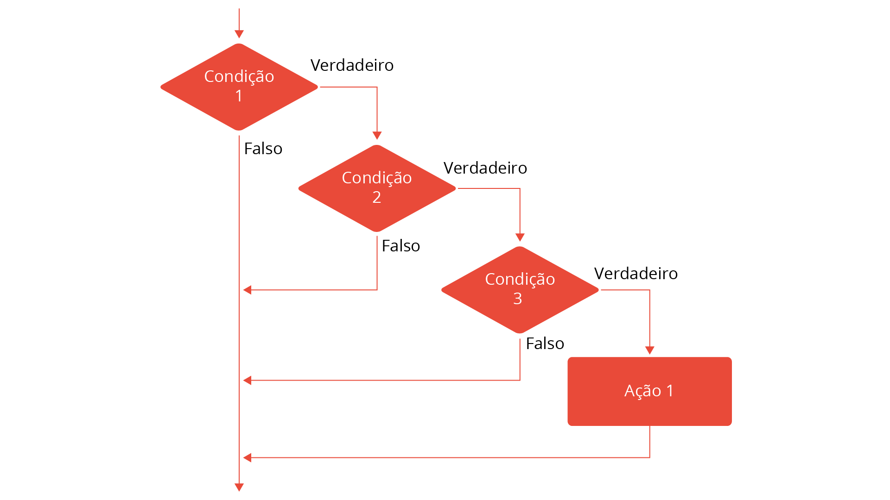
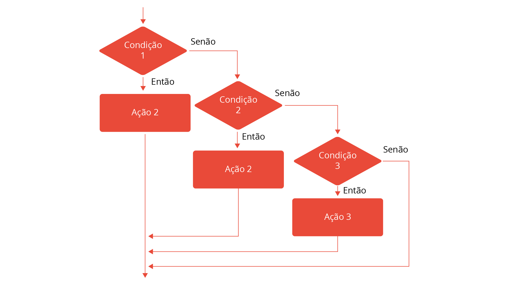
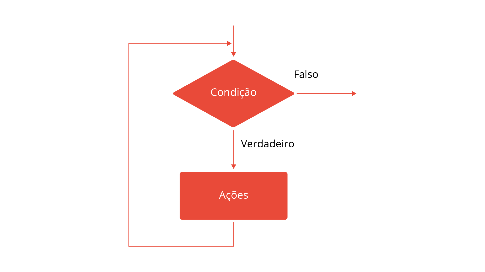
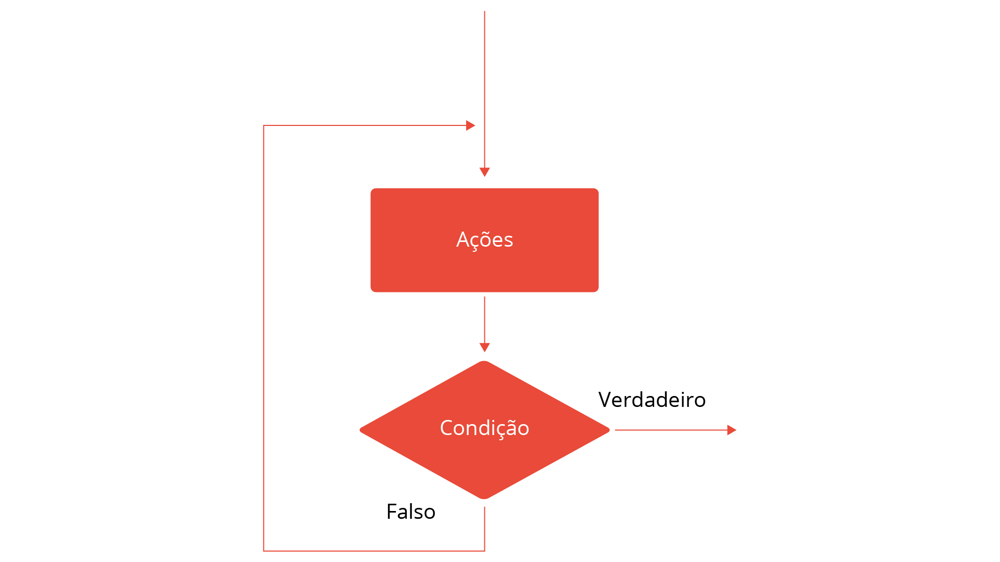

As estruturas de controle fazem parte da estrutura de programação, compostas por instruções (comandos) que representam a lógica de um algoritmo para resolver um problema. Essas estruturas podem ser sequenciais, de seleção e de repetições (Souza et al., 2011, p.126).
Várias estruturas de seleção encadeadas que seguem um determinado padrão lógico
É executada somente quando um conjunto de condições é satisfeito.
Nas linguagens de programação C, C++ e Java, a instrução para essa estrutura é através de if(condição) then. A seguir, veremos uma outra estrutura de seleção encadeada, a heterogênea.
Nessa estrutura de seleção encadeada homogênea, após cada senão existe um se, até que a ação final seja executada quando as condições anteriores não forem satisfeitas.
Na seleção encadeada heterogênea, não é seguido um padrão lógico de encadeamento, como apresentado na estrutura de seleção encadeada homogênea
A estrutura de seleção múltipla escolha é aplicada quando um conjunto de valores discretos precisa ser testado e,
nesse caso, diferentes ações serão executadas em função desses valores, sendo similar a uma estrutura homogênea
SE-SENÃO-SE
Nas linguagens de programação C, C++ e Java, a instrução que representa a múltipla escolha é
switch(valor) -
case(V1): [bloco de instruções] - default:[bloco de instruções].
Nessa estrutura, uma ação é executada se uma condição é testada e satisfeita.
Nessa estrutura, duas alternativas dependem de uma mesma condição (FORBELLONE; EBERSPÄCHER, 2005, p.35).
A estrutura de decisão homogênea está relacionada a diversas condicionais encadeadas de forma homogênea.
Uma estrutura de decisão heterogênea possui condições aninhadas que permite diferentes possibilidades de caminho sem um padrão lógico (FORBELLONE; EBERSPÄCHER, 2005, p.37).
Na estrutura de decisão de múltipla escolha, baseada em um valor, vários caminhos podem ser selecionados.
A estrutura de repetição ENQUANTO-FAÇA é uma estrutura cujo teste da condição é feita no início, antes de cada execução do laço.
A estrutura REPITA-ATÉ é uma estrutura cuja condição é testada no final, sendo verificada após a execução do loop de repetição.
